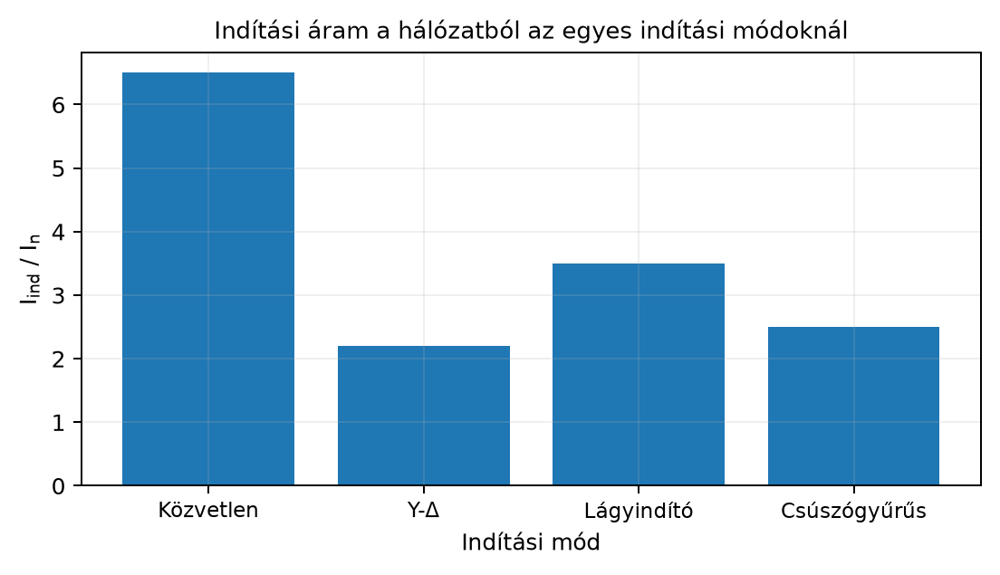

![Y-Δ indítás főáramköri vázlata (háromvonalas) - Szemléltető, háromvonalas rajz. F1 zárlatvédelem, K1 hálózati mágneskapcsoló, F2 hőkioldó (a K3 leágazása után, a tekercsáramot méri; beállítása ≈ 0,58·I_n – ellenőrizendő: gyártói ajánlás, lásd a vezérlésnél). K1 a hálózatot az U1, V1, W1 kapcsokra adja. Csillagban K2 köti össze az U2, V2, W2 kapcsokat (csillagpont); deltában K2 nyit, és K3 az U2-t a V1-re, a V2-t a W1-re, a W2-t az U1-re kapcsolja. K3 és K2 villamosan és mechanikusan reteszelt. PE a motortesten.](assets/ve096-diagram-1.png)
Az aszinkron motor indítása az egyik leggyakrabban félreértett része a hajtástechnikának. A szerelő a munkahelyen leggyakrabban akkor találkozik vele, amikor egy motor bekapcsolásakor a világítás megbillen, egy kismegszakító leold, vagy a szomszédos gépsor vezérlése újraindul. Ilyenkor nem feltétlenül a motor hibás, hanem az indítási módot kell a hálózathoz és a terheléshez igazítani.
Álló motornál a forgórész fordulatszáma nulla, vagyis a forgórészhez képest a forgó mágneses mező a szinkron fordulatszámmal halad. Az indukált forgórész-áram ezért a legnagyobb: a gép ilyenkor rövidre zárt transzformátorként viselkedik, amelynek a szekunder oldala (a forgórész) áll. A hálózatból felvett indítási áramlökés jellemzően a motor névleges áramának 5–8-szorosa. Ez rövid ideig tart, de a hálózati impedancián akkora feszültségesést okozhat, hogy a közelben lévő fogyasztók feszültsége leesik. Ezért a nagyobb motoroknál nem mindegy, hogyan indítunk.
Definíció. Indítási áram
:
az a legnagyobb vonali áram, amelyet a motor álló állapotból való
felgyorsítása közben a hálózatból felvesz.
Definíció. Indítónyomaték
:
az a nyomaték, amelyet a motor álló állapotban, a forgórész
fordulatszámának nulla értékénél kifejt.
Definíció. Indítási áramszorzó
:
a motorkatalógusokban megadott arány,
.
Az indítási mód kiválasztásakor két kérdést kell feltenni:
A legegyszerűbb és legolcsóbb mód, amikor a motort közvetlenül, teljes hálózati feszültségre kapcsoljuk, például egy mágneskapcsolóval vagy motorvédő kapcsolóval. A motorkapcsokra azonnal a névleges feszültség kerül, a motor a természetes nyomaték–fordulatszám görbéje szerint gyorsul fel.
Előnyei: egyszerű, kevés alkatrész, teljes
indítónyomaték.
Hátránya: nagy indítási áramlökés, ami
feszültségletörést okozhat.
A közvetlen indítás tipikus alkalmazási területe a kis teljesítményű motor, illetve az olyan ipari hálózat, ahol a zárlati teljesítmény nagy, és a hálózati engedélyes megengedi. A hálózati engedélyes gyakran korlátozza a legnagyobb indítási áramot; ezt mindig ellenőrizni kell (ellenőrizendő: az adott elosztói terület csatlakozási feltételei).
A csillag–delta indítás a motor tekercseinek kapcsolási módját használja ki. Feltétel. Y-Δ indítás csak olyan motorral végezhető, amelynek tekercse delta kapcsolásban a hálózati vonali feszültségre méretezett – 400 V-os hálózaton Δ 400 V / Y 690 V adattáblájú motorral –, és mind a hat tekercsvég (U1…W2) hozzáférhető. A 230/400 V Δ/Y motor 400 V-on Y-Δ indításra nem alkalmas (lásd Kapocsdoboz, csillag–delta bekötés és forgásirány). Ilyen motornál a tekercs névleges feszültsége 400 V. Indításkor a tekercseket csillagba kapcsolják, így minden tekercsre csak jut. Amikor a motor felgyorsult, a kapcsolás deltába vált.
Törvény. A Y-Δ indítás vonali indítási árama harmada a közvetlen delta indítási áramának, és az indítónyomaték is harmada.
Levezetés. Delta kapcsolásban minden fázistekercsre a vonali feszültség jut, csillagkapcsolásban pedig . A fázisáram közelítőleg arányos a fázisfeszültséggel, ezért a csillagkapcsolás fázisárama -szorosa a delta fázisáramának. Csillagkapcsolásban a vonali áram megegyezik a fázisárammal, delta kapcsolásban a vonali áram -szorosa a fázisáramnak. A hálózati vonali áramok aránya tehát:
A nyomaték a fázistekercs feszültségének négyzetével arányos:
∎
Példa. Egy 11 kW-os, 400 V-os, 4 pólusú motor névleges árama , az indítási áramszorzója . A közvetlen delta indítási áram:
a Y-Δ indítás hálózati indítási árama:
Ha a közvetlen indítónyomaték , akkor a Y-Δ indítónyomaték:
Ez a motor tehát Y-Δ indítással csak akkor indul el, ha a terhelőnyomaték kisebb, mint a névleges nyomaték 60%-a. Ventilátornál, fűrészgépnél vagy szivattyúnál ez gyakran teljesül, de nagy tehetetlenségű gépnél vagy teli szállítószalagnál nem biztos.
A Y-Δ indítás főáramkörét az alábbi háromvonalas vázlat mutatja. A lényeg, hogy a tekercsvégek (U2, V2, W2) két különböző helyre kapcsolhatók: csillagban K2 köti őket össze csillagponttá, deltában K3 a szomszédos tekercs kezdetére (U2 → V1, V2 → W1, W2 → U1) kapcsolja őket. A hőkioldó (F2) a K3 leágazása után, a tekercs kezdete előtt van, így csak a tekercsáramot méri, ezért a beállítása a névleges áram kb. 0,58-szorosa (ellenőrizendő: gyártói ajánlás; a vezérlést és a beállítást a Csillag–delta indítás vezérlése alfejezet tárgyalja).
A kapcsolási sorrend a következő:
Az alábbi ábra a példa 11 kW-os motorjának nyomaték- és áramgörbéjét mutatja a fordulatszám függvényében, közvetlen (delta) és csillag kapcsolásban. Felül látszik, hogy csillagban a nyomaték mindenütt a deltás érték harmada (indításkor ), alul pedig az, hogy mi történik az átkapcsoláskor: 85 %-os fordulatszámnál az áram kb. -ről csak kb. -re (59 A) ugrik, 50 %-nál viszont kb. -re (120 A), ami majdnem a közvetlen indítás -es áramlökése. A görbék szemléltető modellből számoltak (Kloss-alak, ), nem mért értékek. Az interaktív változatban az átkapcsolási fordulatszám és a terhelés típusa (ventilátor vagy állandó ) állítható; az ábra kijelzi az áramugrást, és figyelmeztet, ha a motor csillagban nem gyorsul fel a beállított fordulatszámig.
A vezérlési oldalt részletesen a Csillag–delta indítás vezérlése alfejezet tárgyalja.
A lágyindító félvezetős kapcsolóelemekkel, jellemzően tirisztorokkal fokozatosan emeli a motorkapcsok feszültségét. Nem változtatja a frekvenciát, csak a feszültséget, ezért a motor fordulatszáma a természetes aszinkron jelleggörbe mentén alakul, de az indítási áramot korlátozza.
Definíció. Lágyindító (soft starter): olyan motorindító készülék, amely az indítás alatt a motor kapocsfeszültségét fokozatosan növeli, általában áramkorlátozással.
A lágyindító fontosabb beállításai:
A lágyindító árama a gyártói adat szerint állítható, de a nyomatékra vonatkozó összefüggés mindig érvényes:
Szabály. A motor nyomatéka közelítőleg a kapocsfeszültség négyzetével arányos. Ha a feszültséget a felére csökkentjük, az indítónyomaték körülbelül a negyedére esik.
Példa. Ugyanazt a 11 kW-os motort lágyindítóval indítjuk, és az áramkorlátot értékre állítjuk. A közvetlen indítási áram , így a kezdeti feszültség közelítőleg:
A kezdeti indítónyomaték a közvetlen indítónyomatékhoz képest:
Ez az érték nagyon közel van a Y-Δ indítás nyomatékához, de a lágyindító előnye, hogy az áram és a nyomaték folyamatosan, lökésmentesen változik.
A következő ábra a négy indítási mód hálózatból felvett indítási áramát hasonlítja össze:

A csúszógyűrűs aszinkron motor forgórész-tekercselése szigetelt, és a tekercsvégeket csúszógyűrűkre vezetik ki. A keféken keresztül a forgórész áramkörébe külső ellenállásokat lehet iktatni.
Törvény. A forgórész áramkörébe kapcsolt külső ellenállás:
A maximális nyomaték nagysága a forgóköri ellenállástól nem függ, csak az a szlip változik, ahol a maximális nyomaték fellép. Ez azt jelenti, hogy a külső ellenállást úgy lehet méretezni, hogy a maximális nyomaték éppen álló állapotnál, azaz -nél jöjjön létre. Ekkor a motor a legnagyobb nyomatékával tud elindulni, miközben az indítási áram a névleges áram 2–3-szorosára csökkenthető.
Az indítás folyamata:
Példa. Egy 15 kW-os csúszógyűrűs motor névleges árama . Külső ellenállás nélkül az indítási áram , az indítónyomaték pedig lenne. A megfelelő külső ellenállással az indítási áramot értékre, az indítónyomatékot pedig értékre állítjuk be.
Az indítási áram:
a közvetlen, ellenállás nélküli indítási áram:
Látható, hogy az indítási áram több mint felére csökkent, miközben az indítónyomaték a duplájára nőtt. A csúszógyűrűs indítást ezért nagy tehetetlenségű gépeknél, malmoknál, daruknál, emelőknél használják, ahol a Y-Δ indítás nyomatéka nem lenne elég.
| Indítási mód | Indítási áram a hálózatból | Indítónyomaték | Jellemző alkalmazás |
|---|---|---|---|
| Közvetlen (DOL) | – | – (a motor adatától függően; ellenőrizendő: gyártói adatlap) | Kis és közepes motor, erős hálózat |
| Y-Δ | kb. | kb. | Üres vagy kis terhelésű indítás, nagyobb motor |
| Lágyindító | állítható, tip. – | feszültségcsökkenés négyzetével csökken | Szivattyú, ventilátor, szállítópálya, kíméletes indítás |
| Csúszógyűrűs | – | akár – | Nagy tehetetlenségű terhelés, malom, daru, emelő |
Szabvány. A motorindító kapcsolókészülékekre, mágneskapcsolókra és motorvédő kapcsolókra az MSZ EN 60947 sorozat vonatkozik; a motorindító kombinációk kialakítását és a gyártói bekötési előírásokat mindig az adott készülék dokumentációja szerint kell követni (ellenőrizendő: aktuális szabványkiadás és gyártói adatlapok).
Egy kisebb ipari csatlakozású üzemben 15 kW-os szivattyúmotort közvetlen indítással helyeztek üzembe. Az első indításnál a szomszédos gépsor PLC-je újraindult, mert a hálózati feszültség rövid időre a megengedett érték alá esett. A hálózati engedélyes előírta az indítási áram korlátozását (ellenőrizendő: az adott hálózati engedélyes csatlakozási feltételei).
A megoldás lágyindító beépítése lett. Az áramkorlátot értékre állították, az indítási időt 8 s-ra, a kezdőfeszültséget pedig a szivattyú nyomatékigényéhez igazították. A motor így lökésmentesen indult, a PLC-k nem hibásodtak, és a csőhálózatban sem keletkezett nyomáslökés.
Tanulság: az indítási mód kiválasztása nem csak a motor, hanem a hálózat és a környező fogyasztók védelmét is szolgálja.
Hiba 1. A Y-Δ átkapcsolás túl korán történik. Ha a motor még nem érte el a névleges fordulatszám 80–90%-át, a delta kapcsolás pillanatában majdnem akkora áramlökés keletkezik, mint a közvetlen indításnál. A motorvédő kapcsoló vagy a kismegszakító leold. Helyes: az átkapcsolást időrelével, de a gyakorlatban a motor felgyorsulásának ellenőrzésével és a gyártói ajánlás szerinti időzítéssel kell beállítani.
Hiba 2. A lágyindító áramkorlátját túl alacsonyra állítják. A motor nyomatéka a feszültség négyzetével csökken, ezért előfordulhat, hogy a motor nem tud elindulni, csak zümmög, és a hőkioldó lekapcsolja. Helyes: a kezdőfeszültséget és az áramkorlátot a terhelőnyomaték ismeretében kell beállítani; ha a motor terhelten nem indul, az áramkorlátot a gyártó által megengedett határon belül növelni kell.
Hiba 3. Csúszógyűrűs motornál a külső ellenállásfokozatokat nem iktatják ki időben. A forgórész és az ellenállások túlmelegszenek, a kefék gyorsan kopnak. Helyes: az indítási folyamatot az ellenállásfokozatok kiiktatására tervezett kontaktorokkal és időrelékkel, vagy automatikus indítóval kell vezérelni.
Hiba 4. Közvetlen indítást alkalmaznak olyan hálózaton, ahol a hálózati engedélyes az indítási áramot korlátozza. A nagy indítási áram feszültségletörést okoz, és a szomszédos fogyasztók leállhatnak. Helyes: a csatlakozási feltételeket és a hálózati visszahatást mindig ellenőrizni kell a kivitelezés előtt.
Hiba 5. Y-Δ indítást választanak olyan motorra, amelynek adattáblája 230/400 V Δ/Y. Következmény: 400 V-on csak csillagban üzemeltethető; a Y-Δ indítóval deltában 400 V jutna a 230 V-os tekercsre, és a motor károsodik. Helyes: Y-Δ indításhoz Δ 400 V / Y 690 V adattáblájú motor kell (lásd Kapocsdoboz, csillag–delta bekötés és forgásirány).
A válaszok a Megoldások szakasz elején találhatók.
1. feladat (A). Írd le a közvetlen indítás előnyeit és hátrányait.
2. feladat (A). Egy motor névleges árama , indítási áramszorzója . Számítsd ki a közvetlen indítási áramot.
3. feladat (B). Egy 15 kW-os motor közvetlen delta indítási árama , indítónyomatéka . Számítsd ki a Y-Δ indítás hálózati indítási áramát és indítónyomatékát.
4. feladat (B). Egy lágyindítóval indított motor közvetlen indítási árama . A lágyindítót áramkorlátra állítják. Becsüld meg a kezdeti kapocsfeszültséget és a kezdeti indítónyomatékot a közvetlen indítás arányában.
5. feladat (C). Egy csúszógyűrűs motor külső ellenállás nélkül indítási árammal és indítónyomatékkal indul. A külső ellenállást úgy állítják be, hogy az indítási áram legyen, az indítónyomaték pedig . Magyarázd el, miért növekedhet a nyomaték az áram csökkenése ellenére.
6. feladat (D). Motorvezérlő szekrényben Y-Δ indítót építesz. A motor nem kapcsol át deltába, és a motorvédő relé leold. Ismertesd a hibakeresés lépéseit a feszültségmentesítés öt biztonsági szabálya szerint, és jelöld meg, milyen méréseket végeznél feszültségmentes állapotban, illetve jogosult oktató felügyeletével feszültség alatt.
Közvetlen indítás előnyei: egyszerű kapcsolás, kevés alkatrész, teljes indítónyomaték. Hátrányai: nagy indítási áramlökés, amely feszültségletörést okozhat a hálózaton, ezért csak akkor alkalmazható, ha a hálózat és a hálózati engedélyes megengedi.
Adott:
,
.
Keresett:
.
Képlet:
.
Behelyettesítve:
.
Ellenőrzés: 5–8-szoros tartományba esik, a 7-szeres érték reális.
Adott:
,
.
Y-Δ indításnál:
Ellenőrzés: a Y-Δ indítás indítási árama a névleges áramhoz képest a motor adataitól függően általában 2–3-szoros; ez a érték egy kb. 28 A névleges áramú, 15 kW-os motornál reális (-szoros direkt indítási áram; -szoros Y-Δ indításnál).
Adott:
,
áramkorlát
.
A kezdeti feszültség:
A nyomatékarány:
Ha a közvetlen indítónyomaték például , akkor , tehát a motor még el tud indulni, de kisebb terhelésnél.
A csúszógyűrűs motor külső ellenállása a forgórész áramkörének ellenállását növeli. A maximális nyomaték nagysága nem változik, de az a szlip, ahol a maximális nyomaték fellép, a nagyobb szlip felé tolódik. Ezáltal az álló állapot () közelebb kerül a maximális nyomatékhoz, így az indítónyomaték nőhet, miközben a forgórész-áram és a hálózati indítási áram csökken.
Biztonsági korlát. A feladat tanműhelyi (törpefeszültségű) környezetre vagy jogosult oktató felügyeletére vonatkozik; hálózati feszültségen önállóan ne végezd.
Feszültségmentesítés lépései:
Ezután feszültségmentes állapotban ellenőrizni kell:
Feszültség alatt, jogosult oktató felügyeletével mérni lehet a motor kapocsfeszültségét, az áramfelvételt, valamint a K2 és K3 tekercsének feszültségét. Ha a K2 elenged, de a K3 nem húz be, a hiba a K3 tekercsének áramkörében, a reteszelésben vagy az időrelé záró érintkezőjében keresendő.
Az aszinkron motor álló állapotból való indításakor a hálózatból felvett indítási áram a névleges áram 5–8-szorosa. A túlzott indítási áram feszültségletörést okozhat, ezért az indítási módot a hálózat és a terhelés ismeretében kell kiválasztani. A közvetlen indítás egyszerű, de nagy áramlökést okoz. A Y-Δ indításnál a motor indításakor a tekercsek csillagkapcsolásban, majd delta kapcsolásban futnak; a hálózati indítási áram és az indítónyomaték egyaránt a közvetlen delta indítás értékének egyharmada. Ez a Y-Δ indítás vezérlésének alapja a Csillag–delta indítás vezérlése alfejezetben. A lágyindító feszültségcsökkentéssel korlátozza az áramot; a nyomaték közelítőleg a kapocsfeszültség négyzetével arányos. A csúszógyűrűs motor külső forgórész-ellenállással csökkentett áram mellett nagy indítónyomatékot tud kifejteni, ezért nagy tehetetlenségű gépekhez használják. Az indítási módot mindig a motor, a terhelés és a hálózati engedélyes előírásai szerint kell megválasztani.
Továbbvitt eredmény. A Y-Δ indítás áram- és nyomatékaránya egyharmad, a motor nyomatéka a kapocsfeszültség négyzetével arányos, a csúszógyűrűs gép forgórész-ellenállása a maximális nyomaték szlipjét tolja el. Ezeket az eredményeket használjuk a Fordulatszám-változtatás, Dahlander, frekvenciaváltó és fékezés és a Csillag–delta indítás vezérlése alfejezetekben.